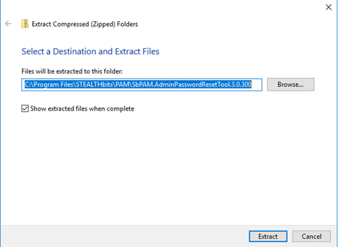
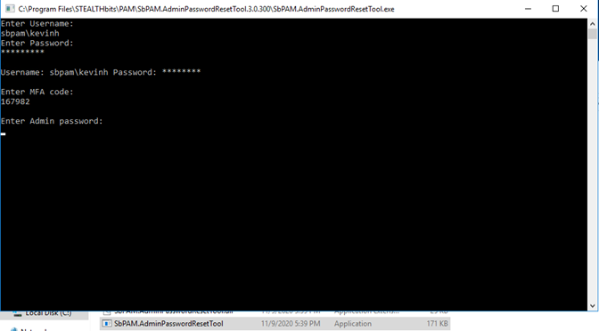

Summary:
Admin Password Reset tool enables an SbPAM user with the Administrator role to change the built-in ADMIN user password.
Submitted by:
Kevin Horvatin
Affected Versions:
3.0 -> 3.0.292.0
Affected Module:
SbPAM
Dev Ticket:
Resolved in Version:
3.0.300
KB Type:
Hotfix
Issue:
User is unable to start the Admin Password Reset tool that is available because of a missing dependency. Running the SbPAM.AdminPasswordResetTool.exe shows the following error:
SbPAM.AdminPasswordResetTool.exe
Unable to initialize:
Unable to resolve service for type 'SbPAM.Actors.Interfaces.IAdminOptionsActor' while attempting to activate 'SbPAM.Identity.SbPAMUserManager'.
Modules Included
YouTrack/Escalations
55353 DevTicket: 880
Instructions:
Find the SbPAM installation directory (Default is C:\Program Files\Stealthbits\PAM)
Unzip the SbPAM.AdminPasswordResetTool.3.0.300.zip into the install directory.

After extracting the files, you can run the SbPAM.Admin.PasswordResetTool.exe by double-clicking it.
This will bring up the following console application. Follow the prompts:

After logging in as a user with the Administrator role, you will be prompted for a new ADMIN password. The Reset tool will prompt you to verify the new password. After verification, the console will close automatically.